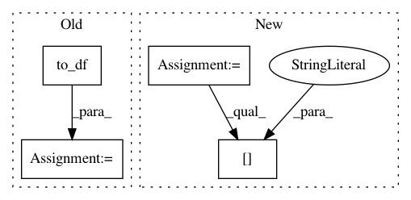

a3b39f9e6e7e1b33a3eb9919923d939430b60b86,QUANTAXIS/QAFetch/QATdx.py,,QA_fetch_get_stock_min,#Any#Any#Any#Any#Any#Any#,255
Before Change
for i in range(26):
data += api.get_security_bars(level,
market_code, code, (25 - i) * 800, 800)
data = api.to_df(data)
data["datetime"] = pd.to_datetime(data["datetime"])
data["code"] = code
data = data.drop(["year", "month", "day", "hour", "minute"], axis=1,
inplace=False).set_index("datetime", drop=False, inplace=False)
data["datetime"] = data["datetime"].apply(lambda x: str(x)[0:19])
After Change
with api.connect(ip, port):
data = pd.concat([api.to_df(api.get_security_bars(level,
market_code, code, (25 - i) * 800, 800)) for i in range(26)], axis=0)
return data\
.assign(datetime=pd.to_datetime(data["datetime"]), code=code)\
.drop(["year", "month", "day", "hour", "minute"], axis=1, inplace=False)\
.set_index("datetime", drop=False, inplace=False)\
.assign(date=data["datetime"].apply(lambda x: str(x)[0:10]))\
.assign(date_stamp=QA_util_date_stamp(data["datetime"].apply(lambda x: str(x)[0:10])))\
.assign(time_stamp=data["datetime"].apply(lambda x: QA_util_time_stamp(x)))\
.assign(type=type_)[start:end]
def __QA_fetch_get_stock_transaction(code, day, retry, api):
data_ = pd.concat([api.to_df(api.get_history_transaction_data(
In pattern: SUPERPATTERN
Frequency: 3
Non-data size: 4
Instances
Project Name: QUANTAXIS/QUANTAXIS
Commit Name: a3b39f9e6e7e1b33a3eb9919923d939430b60b86
Time: 2017-09-01
Author: yutiansut@qq.com
File Name: QUANTAXIS/QAFetch/QATdx.py
Class Name:
Method Name: QA_fetch_get_stock_min
Project Name: tyarkoni/pliers
Commit Name: c19000b012bba5fa7ae54fadc953f5b679dead4f
Time: 2016-10-20
Author: quinten.mcnamara@gmail.com
File Name: featurex/tests/test_extractors.py
Class Name:
Method Name: test_optical_flow_extractor
Project Name: QUANTAXIS/QUANTAXIS
Commit Name: c91ee1c0b3dbeeab4b09a691d3441a7e72a136ff
Time: 2017-08-25
Author: yutiansut@qq.com
File Name: QUANTAXIS/QAFetch/QATdx.py
Class Name:
Method Name: QA_fetch_get_stock_realtime